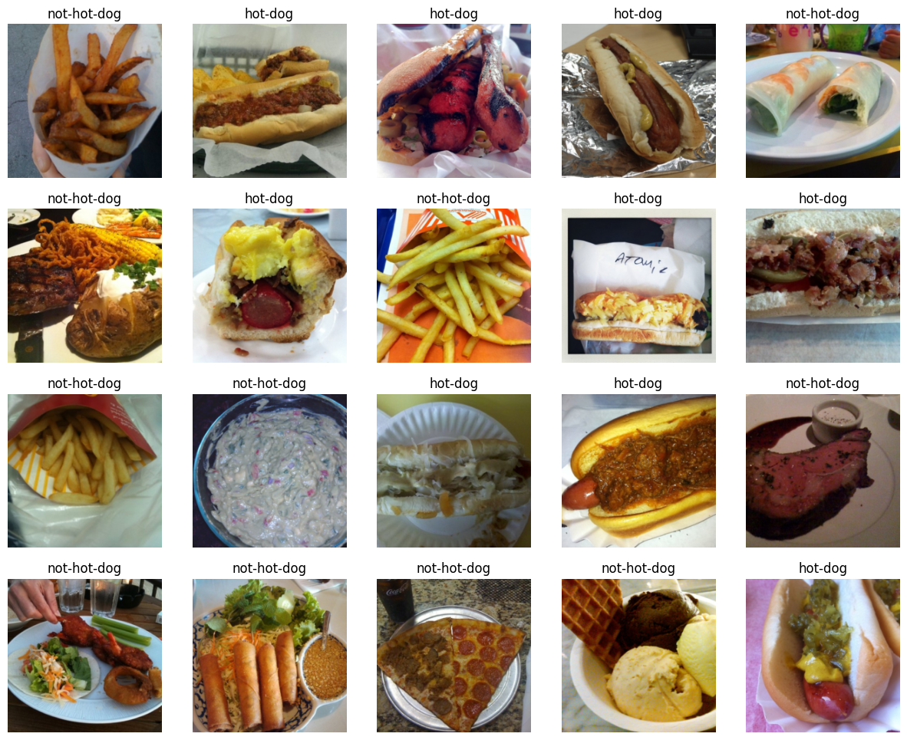

Having recently completed DeepLearning.AI’s wonderful Deep Learning Specialization, I thought I would start the Practical Deep Learning for Coders course by fast.ai. I recently completed the third lesson of Part I, and decided that I wanted to make a binary classifier to test whether an image belongs to the “hot dog” or “not hot dog” class, as seen on that famous Silicon Valley episode.
To create this project, I used the fast.ai library, Gradio, HuggingFace Spaces, this Kaggle dataset, and Google Colab. This article will discuss the notebook that I used to train my model, in addition to the steps I took to deploy it. Feel free to check out my deployed project here. :)
To begin the notebook, I imported any necessary dependencies.
from fastai.vision.all import *
import timm
from google.colab import drive
import osSince I was using Google Colab to execute my notebook cells, next I needed to mount my Google Drive to the Colab notebook’s file system. (This allows one to access and manipulate files stored in one’s Google Drive directly from within one’s Colab notebook.)
# Mount Google Drive
drive.mount('/content/drive')I then specified the path to my dataset directory, which itself contained two additional subdirectories: hot-dog and not-hot-dog. The former contained photos of hot dogs, the latter photos of “not hot dogs.”
path = '/content/drive/MyDrive/fast_ai_experiments/3_neural_net_foundations/hot_dog_not_hotdog/dataset/'Every image in the hot-dog and not-hot-dog subdirectories had a naming format of “number.jpg” (e.g., “1231.jpg”). For the sake of using a better naming format, therefore, I decided to use the format of “hot-dog_index” (e.g., “hot-dog_12.jpg”) for the images of the hot-dog subdirectory, and “not-hot-dog_index” (e.g., “not-hot-dog_12.jpg”) for the images of the not-hot-dog subdirectory.
# List of subdirectories
subdirectories = ['hot-dog', 'not-hot-dog']
# Iterate through subdirectories
for subdir in subdirectories:
subdir_path = os.path.join(path, subdir)
# List all files in the subdirectory
file_list = os.listdir(subdir_path)
# Iterate through the files and rename them with a numbered sequence
for i, filename in enumerate(file_list, start=1):
if filename.endswith(".jpg"):
new_filename = f"{subdir}_{i}.jpg"
os.rename(os.path.join(subdir_path, filename), os.path.join(subdir_path, new_filename))Next, I used the ImageDataLoaders.from_name_func() method. This is a fast.ai method for creating “data loaders” for image classification tasks; it takes various arguments, and defines how the data should be loaded and prepared.
Using this method, we will define our training/validation split as 80% for training and 20% for validation; we will label each image in the hot-dog subdirectory as “hot-dog” and each image in the not-hot-dog one as “not-hot-dog”; and we will re-size each image to be 224 x 224 in pixel size.
# Creating ImageDataLoaders
dls = ImageDataLoaders.from_name_func(
path,
get_image_files(path),
valid_pct=0.2,
seed=42,
label_func=RegexLabeller(pat = r'^([^/]+)_\d+'),
item_tfms=Resize(224),
)Let’s now see a batch of 20 labeled images:
dls.show_batch(max_n=20)
Nice! Let’s now harness the capabilities of the fast.ai library to use transfer learning. We will create a learner object for image classification using the ResNet-34 architecture; train the model on our training set for 3 epochs; and then evaluate the model’s performance on the validation set using the “error rate” metric.
learn = vision_learner(dls, resnet34, metrics=error_rate)
learn.fine_tune(3)| epoch | train_loss | valid_loss | error_rate | time |
|---|---|---|---|---|
| 0 | 0.890783 | 0.328621 | 0.130653 | 02:10 |
| epoch | train_loss | valid_loss | error_rate | time |
|---|---|---|---|---|
| 0 | 0.457683 | 0.231882 | 0.105528 | 00:13 |
| 1 | 0.270772 | 0.355318 | 0.110553 | 00:08 |
| 2 | 0.187048 | 0.347728 | 0.105528 | 00:10 |
Based on Jeremy Howard’s analysis, it might make sense for us to try a different model to improve our error rate. Let’s try the convnext models.
timm.list_models('convnext*')['convnext_atto',
'convnext_atto_ols',
'convnext_base',
'convnext_femto',
'convnext_femto_ols',
'convnext_large',
'convnext_large_mlp',
'convnext_nano',
'convnext_nano_ols',
'convnext_pico',
'convnext_pico_ols',
'convnext_small',
'convnext_tiny',
'convnext_tiny_hnf',
'convnext_xlarge',
'convnext_xxlarge',
'convnextv2_atto',
'convnextv2_base',
'convnextv2_femto',
'convnextv2_huge',
'convnextv2_large',
'convnextv2_nano',
'convnextv2_pico',
'convnextv2_small',
'convnextv2_tiny']learn = vision_learner(dls, 'convnext_tiny_in22k', metrics=error_rate).to_fp16()
learn.fine_tune(3)| epoch | train_loss | valid_loss | error_rate | time |
|---|---|---|---|---|
| 0 | 0.507469 | 0.354891 | 0.090452 | 00:09 |
| epoch | train_loss | valid_loss | error_rate | time |
|---|---|---|---|---|
| 0 | 0.174055 | 0.094325 | 0.040201 | 00:08 |
| 1 | 0.131543 | 0.100523 | 0.045226 | 00:10 |
| 2 | 0.093354 | 0.084719 | 0.045226 | 00:09 |
Indeed, using the convnext models, our error rate has dropped from 0.105528 to 0.045226! Hot dog!
learn.export('model.pkl')